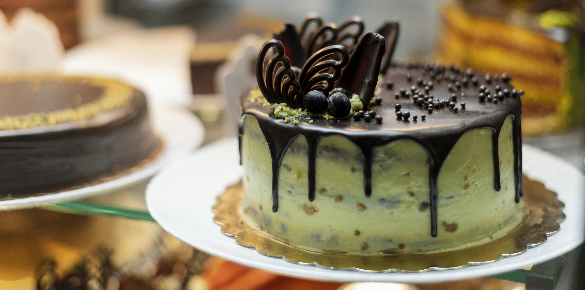

<div id="myCarousel" class="carousel slide" data-bs-ride="carousel">
    <div class="carousel-indicators">
      <button type="button" data-bs-target="#myCarousel" data-bs-slide-to="0" class="" aria-label="Slide 1"></button>
      <button type="button" data-bs-target="#myCarousel" data-bs-slide-to="1" aria-label="Slide 2" class=""></button>
      <button type="button" data-bs-target="#myCarousel" data-bs-slide-to="2" aria-label="Slide 3" class="active" aria-current="true"></button>
    </div>
    <div class="carousel-inner">
      <div class="carousel-item active">
        
  
      </div>
      <div class="carousel-item active">
        
      </div>
      <div class="carousel-item active">
          
      </div>
    </div>
    <button class="carousel-control-prev" type="button" data-bs-target="#myCarousel" data-bs-slide="prev">
      <span class="carousel-control-prev-icon" aria-hidden="true"></span>
      <span class="visually-hidden">Previous</span>
    </button>
    <button class="carousel-control-next" type="button" data-bs-target="#myCarousel" data-bs-slide="next">
      <span class="carousel-control-next-icon" aria-hidden="true"></span>
      <span class="visually-hidden">Next</span>
    </button>
  </div>